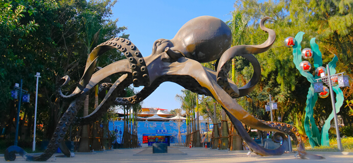
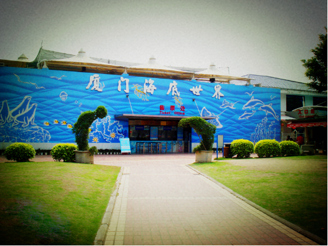
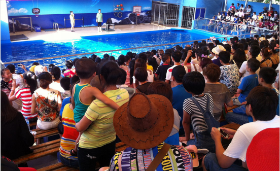
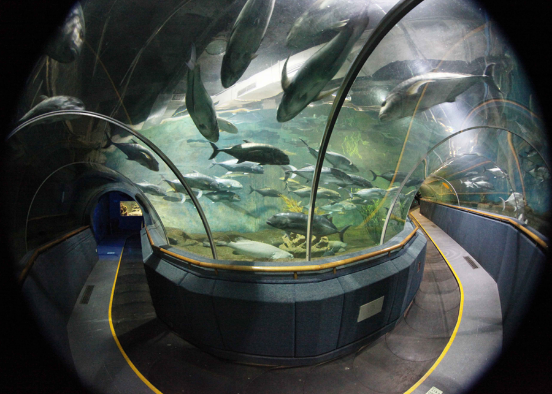

厦门海底世界位于风景秀丽的5A级景区鼓浪屿岛上，隶属于新加坡星雅集团，是厦门市著名景点，于1998年元旦正式对外开放，是集旅游、娱乐、科普教育于一体的大型海洋水族馆，自1999年至今一直荣获并保持市、省、全国三级“科普教育基地”光荣称号。 厦门海底世界景区内设有“企鹅 淡水鱼馆”、“抹香鲸标本馆”、“海洋馆&海底隧道”、“海洋表演馆”四大特色展馆，主要向广大游客展示了我国近海、印度洋、澳州海域及亚马逊河等世界流域内的350多种超万尾知名珍奇水生动物。 特别值得一看的是馆内展示的长达18.6米、重达48吨的“抹香鲸标本”是目前世界上最完整的大型鲸体标本之一。另外，还有精彩纷呈的海洋动物明星定时表演为游客参观助兴，让您不虚龙宫之行，尽览浪漫迷人的海洋世界。
厦门海底世界除了常规展示的五大展区外，每年还不定期推出一些颇具特色的主题特展，如《山羊鱼儿闹新春之“忠义杨家将”海底世界新演义》、《“虾兵蟹将各显神通”科普主题特展》、《“红粉佳人之胭脂鱼”主题特展》、《“长腿欧巴帝王蟹”科普主题特展》、《“七彩糖果鱼”主题特展》、《“海洋集结号寻找彩虹鱼、回味童年梦”主题特展》、《“海洋生物大阅兵之仿生武器炮弹鱼特辑”主题特展》等，从生物学、社会学和人文学等不同角度向游客综合展示海洋物种的多样性、趣味性、互动性，让您体验自然科学的奇妙。接下来海底世界还将呈现更多、更精彩的主题特展！
 330445074@qq.com
330445074@qq.com 12345
12345